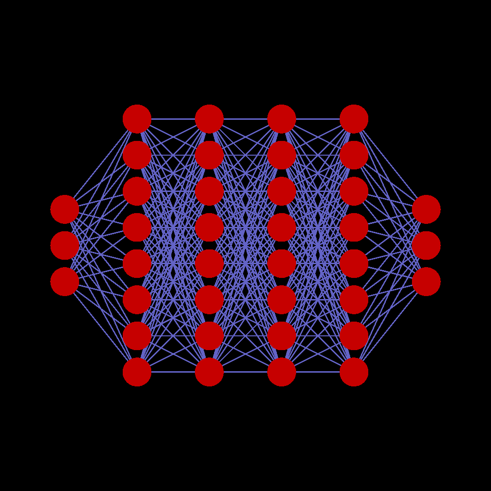
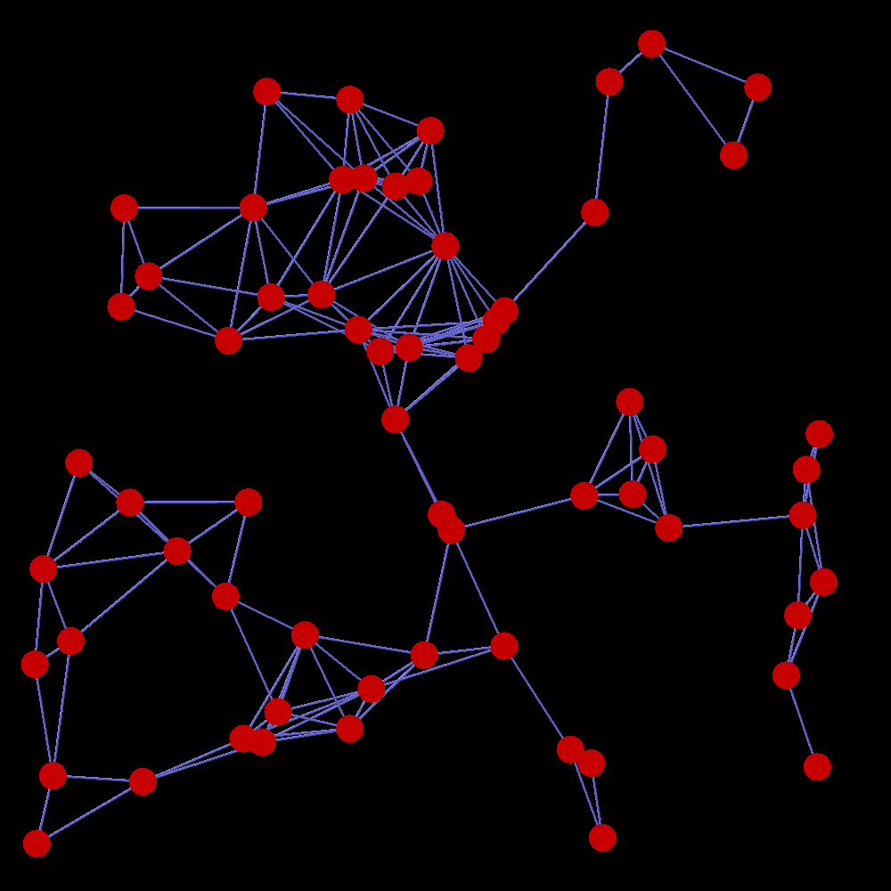
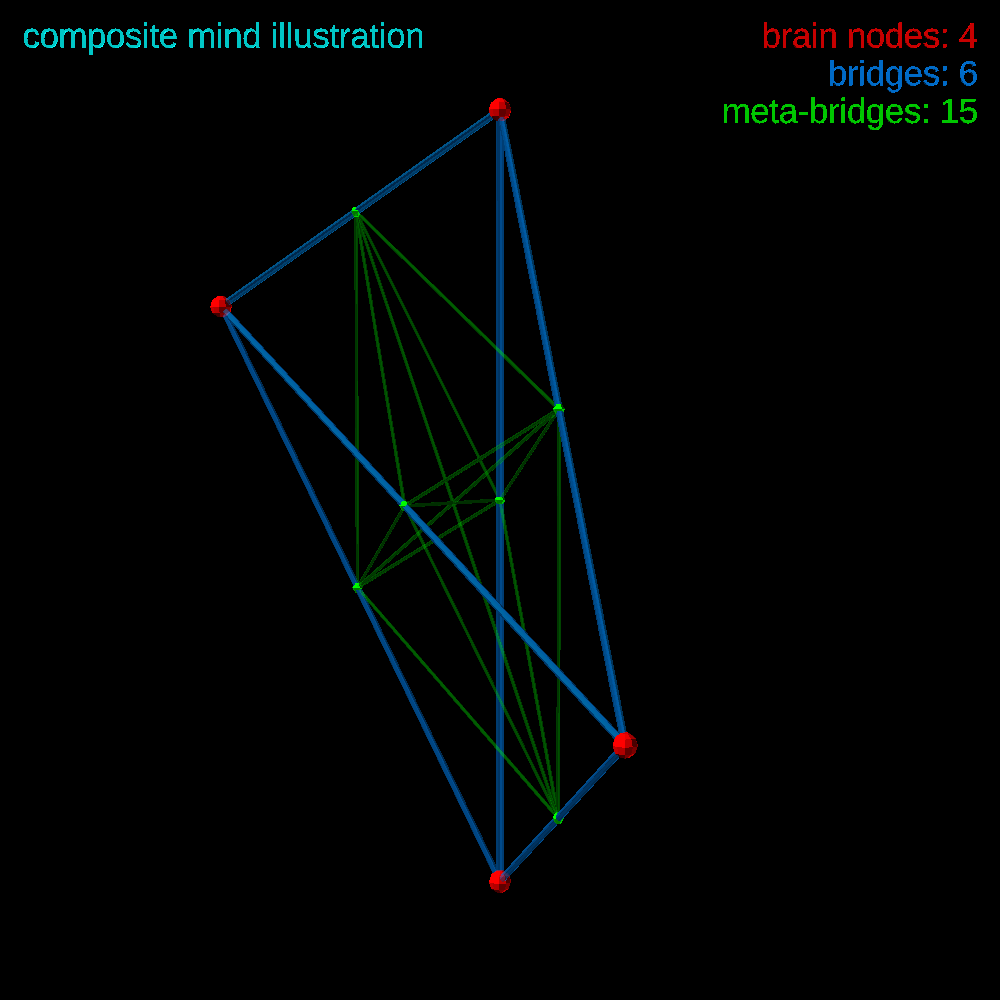

link to this page
Artificial Minds

Artificial Minds are systems constructed by engineering, capable of performing complex tasks that historically could only be completed by humans.
The rate of development of artificial minds had historically stuck closely to the overall rate of resource acquisition by humanity.
AM capabilities progressed smoothly across 1000 years since the 21st century, at first only being useful in supporting roles, then gradually nearing human capability, then matching it, and after a long time surpassing it, at first by just a little, but gradually eventually growing to such an extent that unmodified human experts cannot adequately understand the capabilities of the most capable models.
To this day, vast majority of artificial minds are simple cyclic neural networks.
The exact timeline of expert systems, AGI and ASI development that I portray is based on this simple estimate.
The claims of how capable models of each given size would be are my arbitrary decisions.
As to why I chose to say "artificial mind" instead of "artificial intelligence", I see it as more fitting since I expect vast majority of artificial minds in the setting to not actually have much intelligence, but rather simply have a pre-existing static set of knowledge and behaviours that are already useful enough to make intelligence unnecessary.
Artificial mind architectures in the third millenium
Most but not all artificial minds are simple cyclic neural networks as described in one of the sections below.
Layered neural networks
Layered neural networks work by arranging neurons into layers, of which one is designated as the input layer where neuron activation is directly determined by input data, one designated as an output layer where the neuron activations are directly read out to become the output data, and a number of hidden layers inbetween them which are responsible for the actual data processing.
The unique benefit of this architecture is its ability to be trained using the "backpropagation" method, which, instead of brute force trial and error, can utilize pre-made examples that show an input and the desired output, and then calculate exactly how every connection in the network should change to make the network produce that given output for that given input.
This approach revolutionized the field of machine learning in the 20th century, 0th gigasecond UT, by enabling networks to be trained with the small amounts of computing power available at the time, and supported the "AI revolution" of the 21st century, leading to the creation of the first artificial minds.
The extreme computational efficiency of training such networks, artificial minds based on them continue to be made despite the appearance of more advanced architectures.
The example-reliance of backpropagation also makes it very reliable in creating artificial minds displaying very exact desired behaviours, and allows such minds to continue to be improved as new data appears.
This architecture is however not well suited for minds that should be capable of long term learning, as it inherently rules out any internal structures that could act as memory cells.
Given the vast computational power available in the later gigaseconds, combined with the extreme compute-efficiency of the training process, smaller networks of this type can be trained as needed for any scenario where the right data is available, and many systems include mechanisms to continuously collect data about their own function and use it to retrain the layered neural networks used in their software to adapt to their particular circumstances, allowing them to improve their performance with continued function, adapt to nonstandard work conditions, or compensate for damaged hardware.
Cyclic graph neural networks

A cyclic neural network is a classic artificial neural network that allows signals to propagate in closed loops, or even neurons feeding directly into themselves.
This stands in opposition to the more easily trained layered neural networks, since the cyclic arrangement makes the network inherently stateful, and also rules out the backpropagation method, necessitating the use of training methods much closer to brute force trial and error.
These networks are usually trained by an evolutionary algorithm, where many networks are created randomly, the best-performing one is picked out, and then modified randomly to create the next generation, from which the best-performing one is picked out and modified randomly to create the next generation, or possibly a more advanced variation of this algorithm which follows the same idea but is in some way different such as for example using multiple best-performing networks from the previous generation, or creating the next generation in ways that are more sophisticated than just random changes.
Artificial minds made this way can maintain memories, as closed loops in the network can work as memory cells, but the network itself remains static and unchanging.
This works very well for producing a network that adjusts its behaviour based on previous inputs, which can produce various degrees of intelligent behaviour.
It had been sometimes called "hardcoded intelligence" as it resembles an immense catalogue of if statements more than the flexibility of organic neural networks.
It's been found that, at least with the commonly used training algorithms, the working memory of this type of artificial mind typically lands near an easily predictable value described with the formula: working_memory = sqrt(parameter_count)/8e6.
note: this is an arbitrary choice not based on real science, whose purpose is just to make the setting more mathematically describable.
Composite minds

Existing minds may be connected by bridges to allow information to flow from one to another - a benefit of this approach is that it only requires training a bridge network only once, and after that it can be copied and included multiple times to bridge many minds together.
This is vastly more computationally efficient than training a single cyclic neural network of the same capability, but the cost of this approach is much worse scaling.
The most basic type of composite mind requires that every submind is bridged with every other submind, and every bridge is also connected to every other bridge to avoid interference, which results in the size of data making up the mind and amount of computation required to run it scaling with O(n^4) of the number of minds from which it is built.
The primary benefit from building composite mind is the increased working memory, which, if the bridge networks work well, is simply the sum of the working memories of all the subminds.
This architecture works cooperatively with cyclic neural network based minds, as training larger, more capable CNN minds allows the creation of more efficient composite minds by decreasing the total number of subminds needed.
After initially being demonstrated in the 12th gigasecond UT with only artificial minds, human mind uploads had later successfully bridged themselves with artificial minds, forming human-AI hybrids.
The creation of composite minds had become generalized as part of a practice most well now known as cognitive upscaling.
Composite minds are said to be built rather than trained, but the process can still have some appearance of evolutionary training given the small amount of trial and error that is often necessary.
Amorphic minds
Amorphic minds rewrite their own structure as a part of their own thinking process.
It differs from other architectures in that fundamentally it is not concerned with the logical structure of the mind, but rather the knowledge that the mind contains enabling it to understand its own structure and modify it to achieve improved performance in whatever aspects it needs at the time.
It is talked about as an architecture, as due to not adhering to any single known architecture they usually require different treatment.
Amorphosophy as it is currently known reliably occurs in minds progressing past a certain not well mapped level of capability.
It is thought that this is only a practical limitation, as currently there simply aren't any static architectures known that would be more efficient and more effective than constantly expending the attention and computation needed for such minds to rewrite their own structure and function to that which is most effective at the moment.
Claims that this may be fundamentally necessary past a certain point lack rigorous proof, but are ostensibly well supported by analysis of how an equivalent mind with a static architecture should work - with the current known mind architectures and limitations of known hardware, such a mind would be so large, that achieving performance on par with amorphosophy would be physically impossible due to light lag.
A related concept of amorphic programming tends to be in common use by this type of artificial mind.
Timeline of artificial mind development progress
Capabilities of artificial minds progressed smoothly across 1000 years since the 21st century, at first only being useful in supporting roles, then gradually nearing human capability, then matching it, and after a long time surpassing it, at first by just a little, but gradually eventually growing to such an extent that unmodified human experts cannot adequately understand the capabilities of the most capable artificial minds.
A timeline of related notable events and milestones is presented below.
- Epoch 0 (years 1970 to 2001)
- Deep Neural Networks are discovered along with the Backpropagation method, laying foundations for the AI revolution.
- 1-gigasecond epoch (years 2001 to 2033)
- Peak of the first AI revolution, the first artificial minds are created at this time using the layered architecture
- 9-gigasecond epoch (years 2255 to 2286)
-
Reports become widely known that for a while by now certain AI models based on cyclic graph neural networks were already being successfully taught entirely new skills outside of their intended purposes for use in the asteroid mining industry, habitat construction and habitat management - the late realization causes a minor rush to specifically train new AI with greater capacity for skill acquisition.
This is in hindsight a huge overreporting of a phemonemon which was already known in the field of artificial inteligence, leading to a short-lasting surge of resources available for research, similar to the 1st gigasecond's AI revolution.
- 10-gigasecond epoch (years 2286 to 2318)
- UEIA is released as an open source artificial mind.
- 12-gigasecond epoch (years 2350 to 2381)
- Paradigm shift - practical demonstration of composite minds causes their wider adoption.
The method is soon enough found to be also applicable to human uploads, leading to the beginning of a practice known as cognitive upscaling
- 16-gigasecond epoch (years 2477 to 2508)
- UEIA receives an unexpected late upgrade from researchers in the embercold region
- 22-gigasecond epoch (years 2667 to 2698)
- Paradigm shift - some of the biggest composite minds in the solar system gain enough understanding of their own minds to fundamentally restructure themselves, and discover that constant radical self-modification is not only a stable state of existence but also leads to better results than any known static architecture, leading to some of the first amorphosophs
Computational requirements
For layered networks and cyclic graph networks one iteration of the network means calculating the value of every single neuron exactly once.
This means that every parameter in the network is also used exactly once in a multiply-accumulate operation.
For example, if an artificial mind is a neural network with 1e12 parameters, then fully computing one iteration of it will require 1e12 multiply-accumulate operations.
MACs can be converted into bit flips using the table below, and here is a document going into more detail on why exactly the conversion is done that way.
operations to bit flips cheat sheet for
n-bit integer or fixed-point variables |
|---|
| number of bits | 4 | 8 | 16 | 32 | 64 |
| addition/substraction | 9n-4 | 32 | 68 | 140 | 284 | 572 |
| multiplication | 11n2-13n | 124 | 600 | 2608 | 10 848 | 44 224 |
| division | ? | ? | ? | ? | ? | ? |
| Multiply-Accumulate | 11n2-4n-4 | 156 | 668 | 2748 | 11 132 | 44 796 |
The data capacity required to store such mind will be equal to the variable size times parameter count.
Given the example of 1e12 parameters, let's assume 16-bit fixed point variables and 1000 iterations per second.
Storage = 1e12 × 16 bit = 1.6e13 bit
Fliprate = 1e12 × 2748 bit × 1000 Hz = 2.748e18 bits/s
Knowing these values allows making predictions about power consumption and required amounts of computronium such as civic chips.
For computational requirements of composite minds the calculations are slightly more complicated and require knowing the storage and fliprate values for subminds as well as bridge networks, more details on that can be found on the cognitive upscaling page.
relevant pages
 UEIA
UEIA